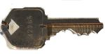

Privacy in a digital environment
This is the blog-post version of a talk held by Lisa and Til at the railsgirls hackday last Dec 14th. It tries to be an introduction to the topic - don't be offended if you find it is an oversimplification, because it certainly is.
What is privacy and why does it even matter?
Privacy is a human right. It is the line that defines how far society can intrude our personal lives. It developed over time from the emergence of personal space and private property, and has become a constituting element of our individuality. Nowadays personal data defines us and our private lives, being able to decide how this data is gathered and used is an important part of our civil rights.
Defend yourself
Anything you do to protect your privacy is better than doing nothing.
Security always changes gradually - it can always be improved, but never perfect. The more you do, the harder and therefore more unlikely it becomes for an adversary to violate your right for privacy. Yes you will mistakes. The tools and concepts can be complicated and intimidating, but considering that no security is the worst situation at all, beginning to take small steps can only make it better for you.
Technical defense
If you communicate with someone else over the internet, then your data travels through untrusted territory, where it could potentially be read by others. The data goes through many intermediate stations sitting between sender and recipient. The route it takes does not have to make sense geographically - because it is just moving electrons, the location of the intermediate stations does not matter that much. Often when two people in germany communicate with each other, even when they are in the same city, the data travels through multiple stations in the US.
Practically all ways to defend against this are based on encryption: to transform your data in such a way that only you and your communication partner can make sense of it.
How does this work?
All kinds of communication data, the text of an email, the audio of a phone call or anything else, can be represented as sequence of numbers. Encryption is an transformation that changes this sequence of numbers, so it doesn't really matter what kind of data is being encrypted.
The transformation could for example be something like: split a sequence of numbers into chunks of 100 digits, and multiply each by 17. The recipient then needs to divide each chunk by 17 to decipher the message. Only you and the recipient know how to encrypt and decrypt the data, so you must not tell anyone that you used the number 17 - it's a 'shared secret'.
Of course the algorithm in this example is hazardously simple and the number 17 could easily be guessed by someone trying out a few numbers. You should instead use well known technology which uses better algorithms.
Symmetric Encryption
When the two communication partners both have a shared secret like in the example above, then it is called symmetric encryption.
To start communicating using symmetric encryption, it is necessary that you somehow exchange the shared secret privately, e.g. by meeting in person. If you only know each other from the internet, then this is not possible.
Thankfully, smart people have come up with techniques to do
Asymmetric Encryption
Asymmetric encryption uses some crazy mathematics to provide you with a so-called public / private key pair. The public key can only be used to encrypt, the private key to decrypt. Therefore you can safely give anyone a copy of the public key, e.g. email it to someone over the internet, but you must keep your private key private, e.g. by storing it on your computer's hard disk.
Here's an analogy:
Public key(s):
Private key: 
The open locks can be copied and sent around freely. When someone wants to send you a message, she protects the message by locking it with one of the locks. The message is now encrypted, and can only be unlocked by you who is the only person in possession of the private key.
This principle is the basis for the following technologies.
Email encryption with PGP
PGP is the most common tool for encrypting emails. A good way to start is to install the email program Thunderbird and a plugin for it called Enigma. We recommend that you visit a cryptoparty or let a friend show you how to set it up. While it's perfectly possible to learn it on your own by reading tutorials, it's more fun and quicker with personal advice.
HTTPS
You are already using it. Whenever you see a lock symbol in the address bar of your browser, then the data that travels between your browser and the web server is encrypted.
Whenever possible, prefer to access a website over https instead of unencrypted http.
Even if the information on that web server is publicly available, the fact that you are accessing it is part of your privacy and worth to be protected. If you are transferring personal data to and from the web server then of course even more so.
Tor
Tor is a very sophisticated technology that enables anonymous browsing. It adds multiple layers of encryption on top of each other and routes your traffic through multiple stations where each station only knows about its next neighbours.
Despite being a complicated technology, it's quite easy to use by installing a modified version of Firefox: https://www.torproject.org/download/download-easy.html
Links
Überwachungsstaat - Was ist das? (Animated video, in german)
Anna List: Kleine Philosophie der digitalen Sicherheit (in german)